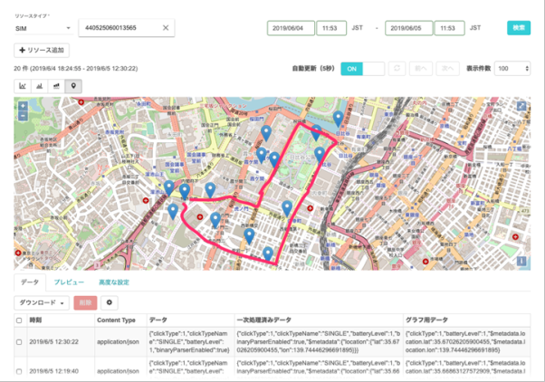
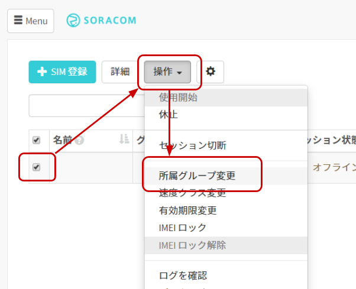
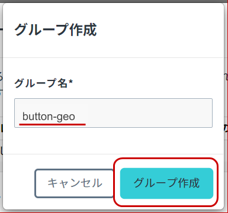
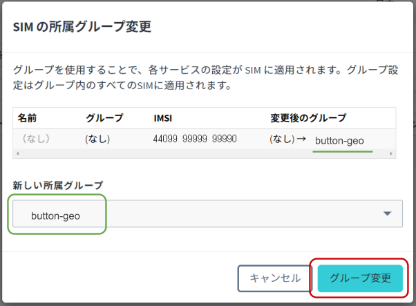
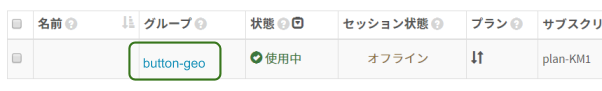
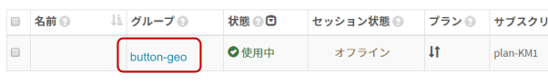
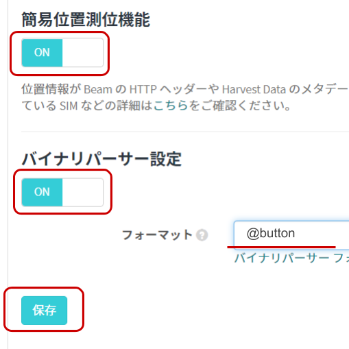
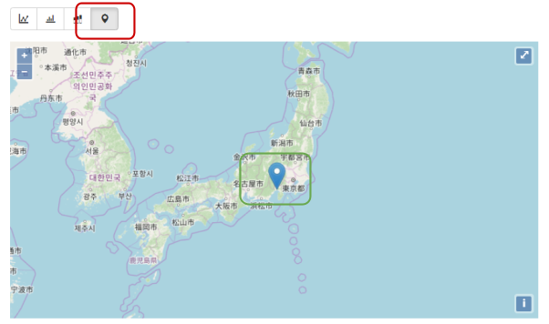
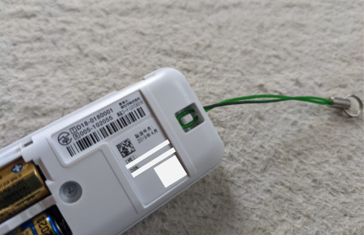

レシピ難易度：★☆☆☆☆
人やモノの位置を簡単に知ることができれば、例えばお子様や高齢になった家族の見守りの一つの方法として利用できるのではないでしょうか。SORACOM LTE-M Button for Enterprise (Plus も同様。以下、 SORACOM LTE-M Button と称します) に内蔵されている SORACOM 特定地域向け IoT SIM の plan-KM1 が持つ「簡易位置測位機能」を使えば、複雑なハードウェアがなくとも実現できます。本レシピでは SORACOM LTE-M Button を利用して、ボタンの押した時の位置情報を通知する仕組みをご紹介します。
本レシピは、動画コンテンツも用意しております。本レシピの動いている様子を、映像で確認できますので、ぜひ動画もご覧ください。
簡易位置測位機能の利用イメージ

赤い線が実際に移動した時の線で、青いピンが「測位点」です。
本レシピを行うのに必要な時間、概算費用
本レシピは以下の通りです。
- 必要な時間: 約40分
- 概算費用: 約6145円
※ 概算費用: ハードウェアや SORACOM を始めとした各種サービスの概ねの費用 (税や送料などの付帯費用や無料枠適用は考慮しないものとしています)
このコンテンツの進め方
ページの内容を読み、また作業を行ったら右下の［Next］を押して次のステップへ進みます。また、［Back］を使って戻ったり、左のナビゲーションメニューでもページの移動が可能です。
左上の［×］を押してコンテンツを終了することができます。また、ページを開きなおすことで再開できます。ページのアドレスはブラウザの［履歴］メニューを利用してください。
本レシピを行うためには以下のものをご用意ください。
ハードウェア
品名 | 数量 | 価格 | 購入先 |
SORACOM LTE-M Button for Enterprise※ | 1 | 5980円 |
※ 金額はレシピ作成時となります。税抜き・送料別です。
※ SORACOM LTE-M Button Plus でも代用可能です。
その他必要なもの
必要なもの | 費用 | 作成方法など |
SORACOM アカウント | 無料※ |
※ アカウント作成・維持の費用の料金です。
SORACOM LTE-M Button は、 SORACOM に登録することで様々なクラウドとの連携が可能となります。そのため、まず SORACOM LTE-M Button がお手元に届いたら、SORACOM へ登録をしましょう。
※ すでに登録済みの場合は次へお進みください。
登録の方法は発注済みの SIM を登録する(JP)をご覧ください。約5分で完了します。
登録が完了すると SORACOM LTE-M Button が SIM 管理の一覧に表示されますので、確認ください。

SORACOM の IoT データ収集・蓄積サービス SORACOM Harvest Data を利用して、データの可視化を簡単に実現してみましょう。
まずはグループの作成と、作成したグループへ SIM を所属させる事から始めます。
SORACOM ユーザーコンソールにログインした後［Menu］>［SIM 管理］とクリックして SIM 管理画面を開きます。

SORACOM Harvest Data でデータの収集を行いたい SIM (SORACOM LTE-M Button) にチェックを付け、［操作］>［所属グループ変更］とクリックします。

「新しい所属グループ」のプルダウンボックスをクリックした後、［新しいグループを作成...］をクリックします。

「グループ作成」のグループ名を入力して［グループ作成］をクリックします。
項目 | 例 | 備考 |
グループ名 |
| 自由に入力可能です。日本語も設定可能です。 |

新しい所属グループが先ほど作成したグループになっていることを確認したら［グループ変更］をクリックします。

自動的に SIM 管理画面に戻ります。
SIM の「グループ」に先ほど作ったグループが設定されていることを確認してください。

以上で、グループの作成と所属の作業は完了です。
グループに「バイナリ―パーサー機能」「簡易位置測位機能」「SORACOM Harvest Data」の3つの設定を行います。
SIM 管理画面から、SORACOM LTE-M Button に割り当てたグループ名をクリックします。

［SORACOM Air for Cellular 設定］をクリックして設定ができるように開きます。

「SORACOM Air for Cellular 設定」で以下のように設定します。
項目 | 設定値 | 備考 |
簡易位置測位機能 | ON | ― |
バイナリ―パーサー設定 | ON | ― |
バイナリ―パーサー設定 / フォーマット |
| 半角英数で入力してください。 |
スイッチはクリックすることで OFF から ON に切り替えることができます。

最後に［保存］をクリックしてください。
同じページの中にある［SORACOM Harvest 設定］をクリックして設定ができるように開きます。

「SORACOM Harvest 設定」で以下のように設定します。
項目 | 設定値 | 備考 |
（スイッチ） | ON | ― |
スイッチはクリックすることで OFF から ON に切り替えることができます。

最後に［保存］をクリックしてください。
その後表示される「SORACOM Harvest が有効になっています」のダイアログでは［OK］をクリックしてください。
以上で「バイナリ―パーサー機能」「簡易位置測位機能」「SORACOM Harvest Data」の3つの設定が完了しました。
すでに SORACOM LTE-M Button (の SIM)は、このグループに所属しているためこの時点から SORACOM LTE-M Button からのデータが SORACOM Harvest Data に表示されるようになります。
SORACOM LTE-M Button からのデータが SORACOM Harvest Data に表示されることを確認してみましょう。
［Menu］>［SIM 管理］とクリックして SIM 管理画面を開きます。
SORACOM Harvest Data でデータの表示を行いたい SIM (SORACOM LTE-M Button) にチェックを付け、［操作］>［データを確認］とクリックします。

表示された画面で［自動更新］を ON にします。
この表示された画面が SORACOM Harvest Data の画面となります。

SORACOM LTE-M Button を押してデータを確認する
SORACOM LTE-M Button のデータが SORACOM Harvest Data に表示されていることが確認できます。
1件のデータが到着した様子

データテーブルを表示する
データはグラフだけでは無く、ページの下の方でデータテーブルとして表示されます。ここで具体的な値を確認できます。

地図を表示する
ピンマークをクリックすると表示が地図に切り替わります。これでデータ内の $metadata.lat と $metadata.lon を基にした位置を描画しています。

自動更新が ON になっていれば、SORACOM LTE-M Button を押した時点での位置が描画され、最終的には以下の様に活用できます。
※ 地図上の赤のラインは別途レタッチソフトで描画しています。
以上で全ての作業は終了です。
ここから先の発展のさせ方等については、この後の「次のステップ」をご覧ください。
本レシピでは費用がかかるサービスを利用しています。
本項をよく読み、必要な操作や解除作業を行うようにして、想定外の費用が掛からないようにしてください。
費用について
ここで記載している金額は全て税別、送料別となります。
SORACOM LTE-M Button
販売価格 5980円(for Enterprise の場合) に加えて、ご利用にあたっては plan-KM1 の基本料金(月額100円)と、データ通信量に応じたデータ通信料※が発生します。
plan-KM1 の料金はご利用料金 - 特定地域向け IoT SIM (plan-KM1) をご確認ください。
SORACOM Harvest Data を始めとした SORACOM プラットフォーム利用料は後述の通りかかります。
※ 目安として、1送信あたり約 0.25 ~ 0.3 円程度
SORACOM プラットフォームの利用料金
サービス／機能 | 料金 |
| |
|
※ 費用詳細はリンク先をご確認ください。
グループ解除
SORACOM Harvest Data 等、「機能が有効になっているグループに所属している SIM × 費用」となっているサービスにおいては、「機能を OFF にする」することで費用の発生を抑えることができます。またもう1つの方法として「グループに所属している SIM の数を減らす(= 解除する)」事でも費用を抑える事ができます。
グループ解除の方法はグループからの解除 (JP)をご覧ください。
SORACOM Harvest Data のデータ削除
SORACOM Harvest Data は基本的にはデータ保管料は無料※です。そのため、保存しておいても害はありませんが、デモ等で利用する際にはデータを綺麗にしておく必要が出てくるため、データ削除について解説します。
※発生から40日を超えたデータは削除されます。40日以上データを保管したい場合はデータ保持期間延長オプション利用料金をご利用ください。
SORACOM Harvest Data 画面 (［操作］>［データを確認］) のデータテーブルで、削除したいデータのチェックボックスを付けた後に［削除］をクリックします。表示されたダイアログで改めて［削除］をクリックすると、削除されます。
※ 複数のデータにチェックをつければ一括で削除可能です。

データの復元はできませんのでご注意ください。
本レシピでは、SORACOM LTE-M Button の通信として利用されている plan-KM1 の簡易位置測位機能を解説しました。素材としての紹介となりましたが、応用例は様々です。
本ページを参考に、是非とも SORACOM LTE-M Button をご活用ください。
活用事例集
様々な活用事例がまとまっています
最新LPWA通信規格 "LTE-M" 搭載ボタンで何つくる？〜次々に身近なユースケースが生まれる理由〜
活用のアイデア
LTE の電波を基にした仕組みであることから、GPS のように空が見えないような屋内でも位置の測位が可能です。
ストラップの取り付け穴があり、また、人体に近づけても影響が無い事を示す Body‐SAR ガイドラインにも対応済みですので、持ち歩きの利用もできます。 (防水防塵ではありませんのでご注意ください)

よくあるご質問はLet's try IoT プロトタイピング ～ 位置情報取得ボタンを作ろう 〜 動画とQAのご紹介でご案内しています。こちらもご覧ください。
外部のクラウドと連携する方法
本レシピでは SORACOM Harvest Data の連携までとなりましたが、他の SORACOM サービスの利用で AWS (Amazon Web Services) を始めとしたクラウドや SaaS との連携が可能となります。
具体的な方法はSORACOM LTE-M Button を様々なクラウドや SaaS で活用するアーキテクチャー例をご覧ください。